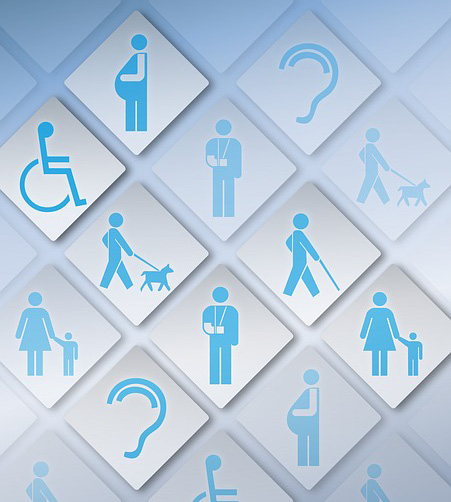

Our Commitment to Accessibility
We are dedicated to ensuring our website is accessible to all user visiting our website.
Web Users and Web Accessibility
| Disability | Description | Common Barriers | Accessibility Principles to Apply |
|---|---|---|---|
| Auditory | Auditory disabilities range from mild or moderate hearing loss in one or both ears (hard of hearing) to uncorrectable hearing loss in both ears (deafness). | Some common barriers those with auditory disabilities face are audio content without captions or transcripts, media players that do not provide volume control, captions, or options to adjust the side and color of text. | Captions and other alternatives for multimedia: Text transcripts and captions are provided for audio content. |
| Cognitive and Neurological | Captions and other alternatives for multimedia: Text transcripts and captions are provided for audio content. | Some barriers people with these disabilities face are complex navigation schemes, web browsers and media players that do not provide mechanisms to stop animations and audio, long passages of text without images or other illustrations to highlight the context. | Content appears and operates in predictable ways: Navigation appears on multiple pages in the same place each time. |
| Physical | Also called "motor disabilities" include weakness and limitations of muscular control, limitations of sensation, joint disorders, pain that impedes movement, and missing limbs. | Websites, web browsers, and authoring tools that do not provide full keyboard support, time limits that do not provide enough time to complete tasks, inconsistent and overly complicated navigation. | Content appears and operates in predictable ways: Navigation appears on multiple pages in the same place each time. |
| Speech | Speech disabilities include difficulty producing speech, such as loudness or clarity of one's voice. | Barriers for people with these disabilities include web based services that rely on interaction using voice only, and websites that offer phone number as the only way to communicate | Content can be presented in different ways: Structural tags are added and marked-up properly. Browsers and assistive technologies have settings to customize presentations. |
| Visual | Visual disabilities range from mild vision loss in one or both eyes (low vision) to uncorrectable vision loss in both eyes (blindness). Some people have color blindness or increased sensitivity to bright colors. | Examples of barriers include images that do not have text alternatives, page layouts that cannot be resized, and text and images with insufficient contrast. | Content does not cause seizures: Avoid including flashing content. Content that flashed at certain rates can cause photosensitive reaction, like seizures. |